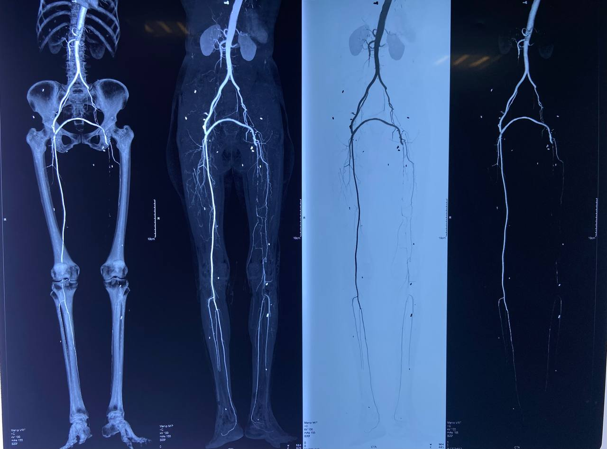

Case 005 · Vascular Surgery · Redo Bypass · Critical Care
Chasing the Flow: Femoral-to-Popliteal Bypass and a Second Chance Taken in Time
Acute-on-chronic ischemia, a diffusely occluded outflow, a cardiac arrest in the ICU — and a limb saved because the team caught the signs and acted before it was too late.
A 51-year-old woman with a background of resected pulmonary carcinoid presented with acute-on-chronic ischemia of the left lower limb, six months after a femoro-femoral crossover bypass performed to salvage an iatrogenic femoral artery injury. What followed was a graft thrombectomy complicated by severe intraoperative hypertension, a distal bypass extension when the native artery proved unsalvageable, a cardiac arrest on the ward the following day, and a second emergency thrombectomy carried out inside the narrow window that separates a viable limb from an amputated one. She walked out of the hospital a week later.
Six months earlier, this patient had undergone a left lobectomy for a pulmonary carcinoid tumour. During that surgery, an arterial line placed in the left common femoral artery resulted in arterial dissection, producing acute limb-threatening ischemia intraoperatively. A femoro-femoral (fem-fem) crossover bypass was performed at the time to restore perfusion from the contralateral right femoral system. Distal pulses were confirmed present postoperatively, and she was discharged in stable condition.
Roughly a month before this presentation, she developed left lower limb pain that she and her family attributed to claudication — exertional at first, then present at rest, then progressively worsening over the 2–3 days preceding admission. CT angiography showed a patent proximal fem-fem graft with an abrupt cutoff of contrast at the level of the left superficial femoral artery (SFA), with no runoff visualised distally. The working diagnosis was acute-on-chronic thrombosis at the graft–SFA anastomosis.
Patient at a glance
Age / Sex51 years / Female
Weight57 kg
Relevant historyPulmonary carcinoid tumour, left lobectomy (6 months prior)
Prior vascular eventIatrogenic left femoral artery dissection during lobectomy → fem-fem crossover bypass
Presenting complaintLeft lower limb pain, ~1 month, acutely worsening over 2–3 days
ImagingCT angiogram: contrast cutoff beyond the SFA on the left; graft-anastomotic thrombus suspected
DiagnosisAcute-on-chronic left lower limb ischemia, graft-anastomotic thrombosis
Coagulation profileDeranged at presentation
Anticoagulation on admissionTherapeutic heparin infusion, ongoing pre-operatively
PlanEmergency graft thrombectomy ± redo bypass
CT angiogram imaging is included below to illustrate the abrupt contrast cutoff that shaped the diagnosis and operative plan.
📷 Preoperative CT Angiogram
Patent fem-fem crossover graft with abrupt loss of contrast column at the level of the left SFA. No distal runoff is visualised beyond this point, consistent with graft-anastomotic thrombosis superimposed on chronic occlusive disease.
Is this really an emergency?
Yes. Acute limb ischemia superimposed on a chronically diseased or bypassed segment is a time-critical surgical emergency. The Rutherford classification governs urgency: a viable or marginally threatened limb (Rutherford I–IIa) allows time for imaging and optimisation, while an immediately threatened limb (Rutherford IIb) — with rest pain, sensory loss, or new motor weakness — requires revascularisation within hours to avoid irreversible muscle and nerve necrosis. Progressive rest pain over 2–3 days in a graft with no distal runoff on angiography places this squarely in the category that cannot wait for elective correction of the coagulopathy; anticoagulation and correction had to proceed in parallel with, not instead of, surgery.
The Anaesthetic Course
Induction and access
General anaesthesia was planned given the anticipated duration, the need for muscle relaxation during graft handling, and the haemodynamic instability expected during clamp release and reperfusion. An arterial line was sited in the upper limb before induction. A central venous catheter was placed in the right internal jugular vein after induction for vasoactive drug delivery and central venous pressure monitoring.
Baseline BP of 200/120 mmHg on entering the OR — what does this mean, and was NTG appropriate?
This reading was taken after the patient was moved onto the OR table, before induction — not a post-intubation pressor response. In a patient with critical limb ischemia, severe rest pain is itself a potent sympathetic stimulus, and untreated pain-driven hypertension of this magnitude before induction is a recognised and expected finding, not a false alarm to be dismissed. A short-acting titratable vasodilator such as glyceryl trinitrate (GTN/NTG) is a reasonable first-line choice here: it is easily titrated, has a rapid offset if hypotension develops, provides venodilation that can be favourable if there is any element of volume overload, and does not blunt the heart rate response needed to detect subsequent hypovolaemia or bleeding. The alternative reasoning is equally valid — an unrepaired ischaemic limb with occluded outflow does not benefit from arteriolar vasodilation from a perfusion standpoint (there is nowhere for the flow to go until the graft is fixed), so some clinicians would prioritise adequate analgesia and depth of anaesthesia first, reserving vasodilators for pressures that remain dangerously high despite this. Given that NTG was used only in the first hour and titrated off as the case progressed toward hypotension, it was used appropriately as a short bridge rather than a sustained strategy.
Intraoperative haemodynamics: a full swing from hypertension to shock
The case illustrates a haemodynamic arc familiar to anyone who has anaesthetised a patient for emergency revascularisation: severe hypertension at the outset from pain and sympathetic activation, followed by a swing toward hypotension as anaesthesia deepened, fluid shifts occurred, and — critically — as the ischaemic, acidotic, hyperkalaemic limb was reperfused.
On arrival in OR
BP 200/120 mmHg, HR 110 bpm, prior to induction. Attributed to ischaemic pain and sympathetic surge. GTN infusion commenced for the first hour of surgery, titrated to effect.
Early intraoperative
Antibiotic prophylaxis given. Multimodal analgesia maintained throughout the case, with intraoperative opioids as the primary analgesic component and paracetamol used as an opioid-sparing adjunct. Serial arterial blood gases sent throughout the case to track acid-base status, potassium, ionised calcium, and lactate. Systemic heparinisation given in two divided doses, guided by activated clotting time (ACT) rather than a fixed schedule.
Mid-case through late intraoperative
After the GTN infusion was weaned, blood pressure remained labile and then trended downward as anaesthesia deepened, blood loss continued, and clamp/reperfusion physiology began to dominate. Hypotension during this middle portion of the case was managed with fluid optimisation, adjustment of anaesthetic depth, and correction of acid–base and electrolyte derangements rather than with a vasoactive infusion. Noradrenaline was started only in the final approximately 1.5 hours of surgery, once hypotension persisted despite these measures, and was titrated to a mean arterial pressure target.
Reperfusion
Serial ABGs guided correction of metabolic acidosis (sodium bicarbonate), hyperkalaemia (calcium, insulin-dextrose as required), and ionised hypocalcaemia (calcium chloride/gluconate) — the expected biochemical signature of reperfusing an ischaemic limb.
Throughout
Goal-directed fluid therapy using stroke volume variation (SVV) and pulse pressure variation (PPV) guided volume replacement. Five units of Plasma-Lyte, packed red cells, and fresh frozen plasma were given to address ongoing losses and the deranged coagulation profile. Urine output was maintained at approximately 1600 mL over the case, reflecting adequate renal perfusion pressure and volume status.
Closure
Protamine given to reverse residual heparin effect after the vascular repair was secured. Patient kept intubated and ventilated, transferred to ICU on a low-dose noradrenaline infusion for ongoing haemodynamic support and monitoring.
The Haemodynamic Arc of the Case
A schematic representation of the pressure trend, not a plotted vital-signs chart: severe hypertension on arrival, treated with GTN; a reversal into hypotension as anaesthesia deepened and the ischaemic limb was reperfused; noradrenaline started and titrated; relative stability by closure, carried into the ICU on a low-dose infusion.
The numbers behind the drugs
Heparin — Intraoperative Systemic Anticoagulation
For open arterial thrombectomy/bypass, a weight-based bolus of 70–100 units/kg is standard before clamping (roughly 4,000–5,700 units for this 57 kg patient), titrated to a target ACT of 200–300 seconds, with supplemental boluses guided by repeat ACT rather than fixed timing — consistent with the two intraoperative doses given here.
Noradrenaline — ICU Infusion
Prepared as 8 mg in 50 mL (160 mcg/mL). At an infusion rate of 2 mL/hr in a 57 kg patient, this delivers approximately 0.09 mcg/kg/min — a low-to-moderate, appropriately titrated dose for post-reperfusion vasoplegia and supporting perfusion pressure to the fresh graft.
Goal-Directed Fluid Therapy
Dynamic indices — stroke volume variation (SVV) and pulse pressure variation (PPV) — were used to guide fluid administration rather than static pressures alone, appropriate in a mechanically ventilated patient with an arterial line already in place and large expected fluid shifts from bleeding, third-spacing, and reperfusion.
Protamine
Given at case closure to reverse circulating heparin once the anastomosis was secure, reducing the bleeding risk from residual anticoagulation before transfer — standard practice after therapeutic intraoperative heparinisation for vascular procedures.
The Surgical Findings
On opening, a thrombosed anastomosis was confirmed at the graft–SFA junction. Graft thrombectomy was performed and flow checked. A Fogarty balloon catheter was passed to clear thrombus from the outflow tract, but could not be advanced through the SFA — a finding that changed the operative plan. Extending the dissection revealed the underlying problem: the native SFA itself was chronically diseased, with extensive atherosclerotic plaque, and could not serve as a reliable outflow target.
The popliteal artery was exposed, but complete occlusion was found extending from the SFA through to the distal popliteal/tibioperoneal trunk. With no usable outflow above this point, the surgical team performed a femoral-to-popliteal (distal) bypass, bypassing the diseased SFA segment entirely and re-establishing flow into the popliteal artery. Distal pulses were confirmed present by handheld Doppler at the end of the procedure, with good triphasic/biphasic signals.

Image: ../media/Case005_Intraop_Graft.jpg
';">
📷 Intraoperative Graft Picture
The completed distal femoral-to-popliteal anastomosis, photographed at the end of the procedure prior to closure — the new bypass conduit re-establishing flow into the popliteal artery beyond the diseased, occluded SFA segment.
Why the Fogarty catheter failing to pass matters
A thrombectomy catheter that cannot traverse a segment is not simply "stuck" — it is telling you the outflow vessel itself is diseased, not just occluded by a fresh, removable clot. Acute-on-chronic ischemia implies exactly this: a fresh thrombus superimposed on a chronically narrowed or plaque-laden artery. When mechanical thrombectomy fails to restore a patent conduit, the correct response is not repeated attempts at the same level — it is to extend the dissection, find a healthier outflow vessel, and construct a new bypass to it. That is precisely what happened here.
ICU Course: Extubation, Then a Cardiac Arrest
The patient remained intubated and ventilated overnight on a titrated noradrenaline infusion. The following day she was extubated, awake, and obeying commands. By evening, however, her condition deteriorated: she developed ventricular tachycardia, was reintubated, and underwent cardiopulmonary resuscitation for two cycles before return of spontaneous circulation (ROSC) was achieved.
Standard post-arrest ICU care followed — antiarrhythmic therapy, serial arterial blood gas correction, antibiotic cover, volume optimisation, glycaemic control, and hourly urine output monitoring. The following day, the patient required a further three cycles of CPR. A multidisciplinary team was convened, including neurology; NCCT and HRCT imaging were obtained, and the neurology assessment was consistent with an acute ischaemic stroke.
The second crisis: the limb was failing too
While the cardiac and neurological picture was being managed, handheld Doppler examination of the left lower limb revealed poor distal signals below the SFA, and skin colour change consistent with critical hypoperfusion had already begun — raising concern for myonecrosis if flow was not restored urgently. This occurred in a patient already dependent on inotropic and vasopressor support, freshly post-cardiac arrest, with an uncertain neurological outcome. The decision to return to the operating theatre for a redo thrombectomy under these circumstances was a genuinely difficult one, weighing global physiological instability against an unambiguous, time-limited threat to limb viability.
The Redo Thrombectomy: A Second Chance, Taken in Time
The Decision, Mapped Out
Arguing for delay
Patient just post-cardiac arrest, ROSC achieved after 2+3 cycles of CPR
Ongoing inotrope/vasopressor requirement
Neurological status uncertain, stroke suspected
General anaesthesia itself carries risk in this state
↓
Arguing for immediate surgery
Poor Doppler signals distal to the SFA — flow is failing now
Skin colour change already present — a late, not early, sign
Warm ischaemia time is fixed and unforgiving (~4–6 hrs to myonecrosis)
A graft that thrombosed once is unlikely to spontaneously improve
↓
Decision: the limb's ischaemic clock does not pause for the patient's other physiology to improve. The multidisciplinary team proceeded to theatre for redo thrombectomy while continuing full cardiovascular and neurological support in parallel — treating this as two urgent problems managed simultaneously, not sequentially.
The multidisciplinary team elected to proceed with an emergency redo thrombectomy at the graft site, recognising that the limb remained salvageable and that prompt action offered the best chance of a good outcome despite the patient's critical overall condition. Thrombectomy was performed, and post-procedure Doppler confirmed restored distal signals with palpable pulses — the limb had been salvaged.
What "the window" actually means
Skeletal muscle tolerates warm ischemia poorly — irreversible myonecrosis begins within approximately 4 to 6 hours of complete arterial occlusion, with nerve tissue affected even earlier. Once skin colour change and Doppler signal loss are present, the clock is not theoretical; it is actively running. The decision to operate on a patient who has just survived a cardiac arrest and remains on vasopressor support is never taken lightly, but a limb lost to delayed revascularisation cannot be recovered by later stabilising the rest of the physiology. This is the central tension of vascular emergencies in critically ill patients: the surgical indication does not wait for the patient to become a better anaesthetic candidate.
Following the successful redo thrombectomy, the patient's condition gradually stabilised. She was weaned from inotropic and vasopressor support, extubated, and transferred out of the ICU to the ward within three days — without cardiovascular or respiratory support. She was discharged home walking approximately one week after the redo procedure.
The Recovery, at a Glance
Day 0–1
VT → arrest → ROSC → 2nd arrest, 3 cycles CPR
→
Redo OR
Emergency thrombectomy, signals restored
→
Day 3
Off all support, ICU → ward
→
Day ~10
Discharged home, walking
Complications Relevant to This Case
Reperfusion Syndrome
Restoring flow to a chronically and then acutely ischaemic limb releases potassium, hydrogen ions, myoglobin, and lactate into the systemic circulation, producing hyperkalaemia, metabolic acidosis, and hypotension — precisely the pattern seen intraoperatively here, and the reason serial ABGs are non-negotiable during clamp release.
Rhabdomyolysis / Myonecrosis
Prolonged ischaemia causes muscle cell breakdown with myoglobin release, risking acute kidney injury. Adequate urine output (as maintained here, ~1600 mL intraoperatively) and volume repletion are protective; the skin colour change and poor Doppler signals noted later were warning signs of this process recurring.
Compartment Syndrome
Reperfusion of an ischaemic limb causes tissue oedema within a fixed fascial compartment, which can itself compromise perfusion. Fasciotomy should be considered proactively in prolonged ischemia, especially after a redo procedure with a second ischaemic insult.
Graft Rethrombosis
A graft that has already thrombosed once, in the setting of a chronically diseased native artery, remains at elevated risk of repeat thrombosis — which is exactly what necessitated the second operation. Ongoing anticoagulation and close monitoring of distal perfusion are essential after any thrombectomy.
Perioperative Cardiac Arrest
The combination of severe haemodynamic swings, reperfusion-related electrolyte derangement, and a critically ill vascular patient created substantial arrhythmic risk. The ventricular tachycardia and subsequent arrests underline the need for continuous rhythm monitoring well beyond the immediate postoperative period.
Ischemic Stroke
Cardiac arrest with variable periods of low or absent cerebral perfusion carries a substantial risk of hypoxic-ischaemic brain injury or embolic stroke, as borne out by the neurology findings here. Early imaging and neurology involvement, as occurred, are essential to guide prognosis and ongoing care.
Guidelines, Protocols, and the Evidence Base
Key frameworks
Rutherford Classification for Acute Limb Ischemia: Stratifies urgency by viability (I: viable, IIa: marginally threatened, IIb: immediately threatened, III: irreversible), directly guiding the timeline for revascularisation in this case.
ESVS Clinical Practice Guidelines on Acute Limb Ischaemia (2020): Recommend immediate systemic anticoagulation on diagnosis, with revascularisation timing determined by the severity of threat rather than deferred for full correction of coagulopathy.
ACC/AHA Perioperative Guidelines: Support arterial line and central venous access for cases with anticipated major haemodynamic swings and vasoactive drug requirements, as employed here.
Surviving Sepsis/Critical Care GDT principles (applied to vascular reperfusion): Dynamic indices (SVV/PPV) are preferred over static filling pressures for fluid responsiveness assessment in mechanically ventilated patients without arrhythmia — appropriate for this case's monitoring strategy.
ILCOR/AHA Advanced Cardiac Life Support: Governed the resuscitation following ventricular tachycardia and cardiac arrest, including the multiple CPR cycles and post-ROSC bundle of care described.
What I Keep Coming Back To
This case is really two emergencies stacked on top of each other, separated by less than 48 hours. The first — a thrombosed graft with no usable outflow — was solved by a surgical team willing to extend the dissection and change the plan mid-operation rather than force a failing strategy. The second — a critically unstable, freshly resuscitated patient with a dying limb — was solved by a multidisciplinary team willing to accept the risk of returning to theatre because the alternative, delay, was not actually safer. It only felt safer.
From an anaesthetic standpoint, the through-line is vigilance across a shifting haemodynamic terrain: severe hypertension from pain, a swing into vasoplegic hypotension from anaesthesia and reperfusion, an electrolyte storm that had to be corrected in real time, and enough foresight to secure invasive monitoring before any of it happened. None of the individual interventions here were exotic. What mattered was doing the ordinary things — serial gases, dynamic fluid indices, weight-based anticoagulation, appropriately titrated vasopressor support — without delay, and being willing to go back into the operating room when the data on the skin and the Doppler probe said the window was still open.
The surgical indication does not wait for the patient to become a better anaesthetic candidate. Sometimes the safest thing you can do is go back to theatre.
— What this case taught me
References
Björck M, Earnshaw JJ, Acosta S, et al. Editor's Choice – European Society for Vascular Surgery (ESVS) 2020 Clinical Practice Guidelines on the Management of Acute Limb Ischaemia. Eur J Vasc Endovasc Surg. 2020;59(2):173–218.
Rutherford RB, Baker JD, Ernst C, et al. Recommended standards for reports dealing with lower extremity ischemia: revised version. J Vasc Surg. 1997;26(3):517–538.
Blaisdell FW. The pathophysiology of skeletal muscle ischemia and the reperfusion syndrome: a review. Cardiovasc Surg. 2002;10(6):620–630.
Hirsh J, Bauer KA, Donati MB, et al. Parenteral anticoagulants: American College of Chest Physicians evidence-based clinical practice guidelines. Chest. 2008;133(6 Suppl):141S–159S.
Panchal AR, Bartos JA, Cabañas JG, et al. Part 3: Adult Basic and Advanced Life Support: 2020 American Heart Association Guidelines for CPR and ECC. Circulation. 2020;142(16_suppl_2):S366–S468.
Cannesson M, Pestel G, Ricks C, et al. Hemodynamic monitoring and management in patients undergoing high risk surgery: a survey among North American and European anesthesiologists. Crit Care. 2011;15(4):R197.
Nolan JP, Sandroni C, Böttiger BW, et al. European Resuscitation Council and European Society of Intensive Care Medicine Guidelines 2021: Post-resuscitation care. Resuscitation. 2021;161:220–269.
September 2026Vascular Surgery · Redo Bypass · ICU · Hemodynamics · Cardiac Arrest
This case has been fully de-identified. No institutional or departmental identifiers are included. Patient age, procedural details, drug doses, and timeline elements have been generalised where necessary to protect confidentiality, consistent with HIPAA principles, India's Digital Personal Data Protection (DPDP) Act 2023, and NMC ethical guidelines. AI tools may assist with language refinement and presentation, but all content is reviewed, curated, and published by the author. This content is for educational reflection only and does not represent the views of any institution, employer, or training program, and is not a substitute for independent clinical judgment.